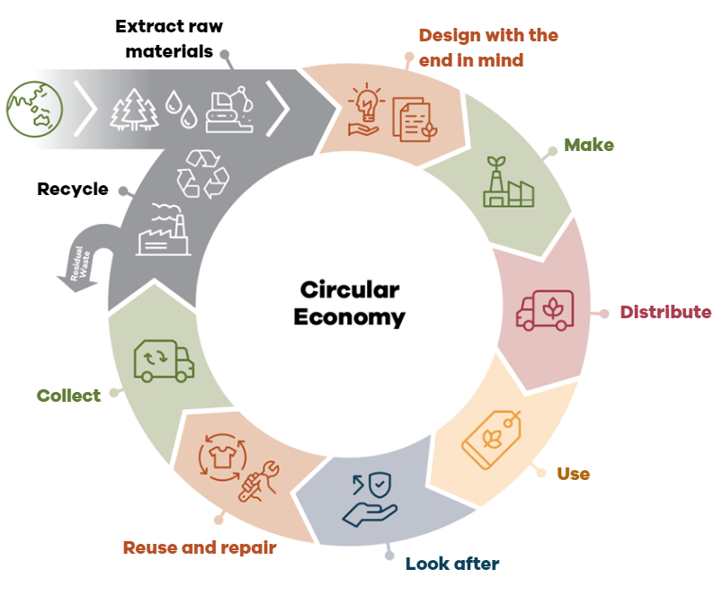
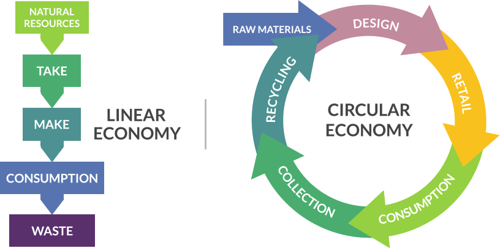
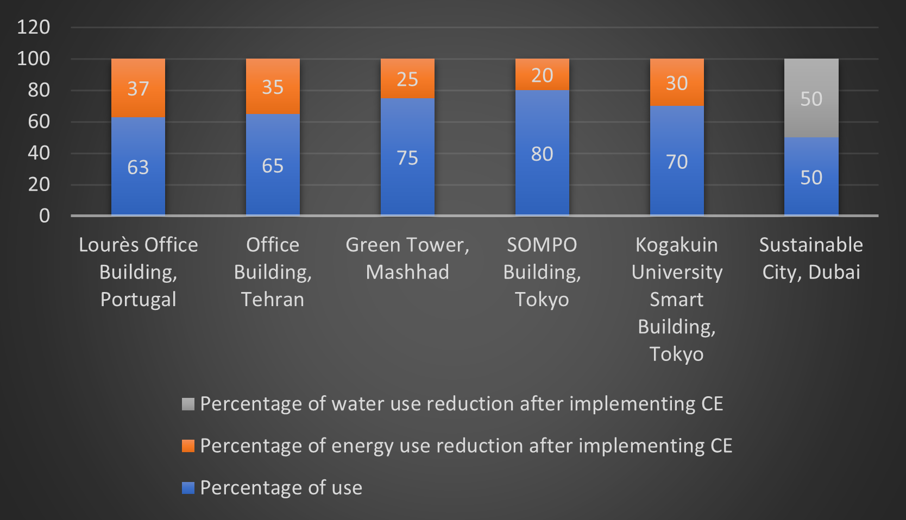
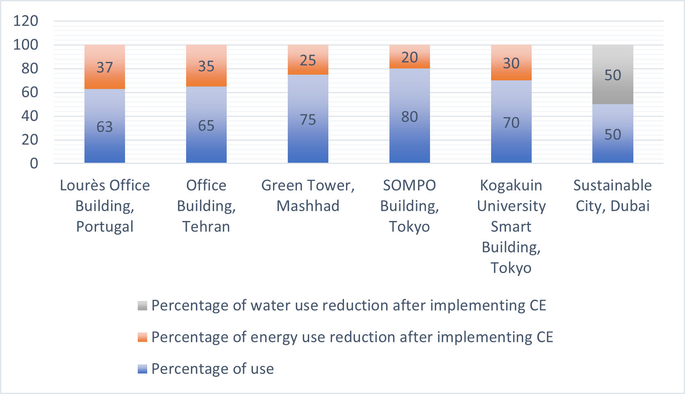
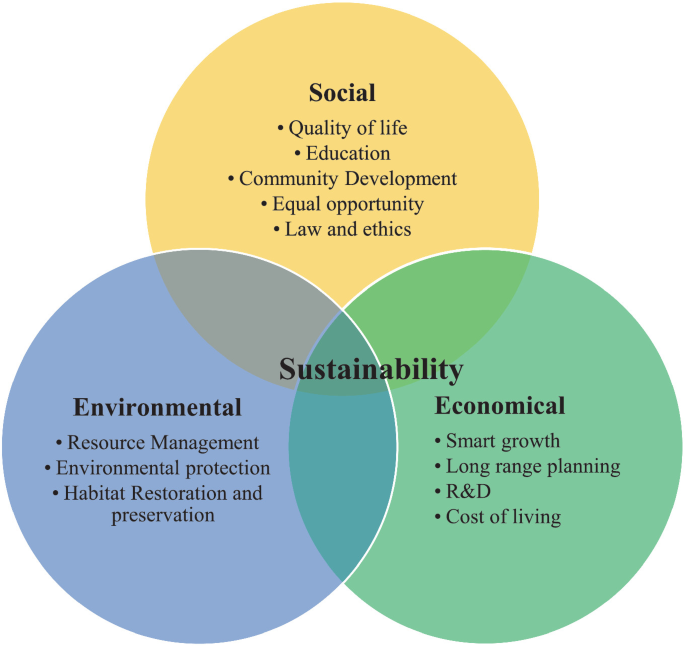

A Review of Circular Economy Strategies for Existing Buildings: Challenges and Solutions
![]()
The construction sector is one of the main contributors to waste generation, depletion of natural resources, and environmental degradation. This article examines the role of circular economy strategies in existing buildings, analyzing the associated challenges, solutions, and future pathways. Using a systematic literature review and qualitative analysis, the environmental, economic, and social benefits of circular actions—such as material reuse and recycling, energy efficiency, waste reduction, water conservation, and operational optimization—have been identified. Moreover, challenges including high initial costs, technical limitations, regulatory barriers, and market issues are explored. Proposed solutions involve financial incentives, policy reforms, the development of innovative technologies, and stakeholder education. The findings indicate that adopting circular economy practices can help reduce the carbon footprint of buildings, preserve natural resources, enhance occupant health and well-being, lower energy costs, increase property value, and create job opportunities. The paper emphasizes the importance of behavioral and cultural change in adopting circular approaches and promoting a culture of sustainability. Future research directions focus on assessing the long-term impacts of circular actions, developing sustainable materials and technologies, analyzing the socio-economic effects of these practices, and the role of policy in promoting the circular economy. This study provides a comprehensive framework for accelerating the transition to a resilient, sustainable, and equitable built environment, highlighting the importance of collaboration among governments, industries, and local communities in achieving sustainable development goals.
Circular Economy, Building Renovation, Sustainability, Energy Efficiency, Material Reuse
The original article was written in Persian; the following is a translation of the original article.
1. Introduction
The traditional linear economy operates on a “take–make–dispose” model, in which raw materials are extracted, used to produce goods, and ultimately discarded as waste. This model is inherently unsustainable from both environmental and resource management perspectives, as it results in excessive resource extraction, depletion of natural reserves, habitat destruction, and biodiversity loss. Additionally, waste disposal through landfilling or incineration leads to environmental pollution—including soil and water contamination—and significantly accelerates climate change due to greenhouse gas emissions [1], [2], [3], [4], [5], [6].
The historical trajectory of the linear economy—particularly since the Industrial Revolution—reveals exponential increases in raw material and energy consumption, giving rise to high-consumption urban forms that exert unprecedented stress on ecosystems [7], [8], [9]. In Iran, the challenges associated with the linear model are especially visible in the construction sector. For instance, studies show that construction waste generation in infrastructure projects has become a significant problem due to poor resource management and inefficient planning [10], [11]. The uncontrolled disposal of industrial and municipal waste into natural environments has also contaminated soil and water resources, producing widespread negative impacts on biodiversity and local community well-being [12]. Moreover, greenhouse gas emissions from industrial activities and waste incineration are among the leading causes of climate change in the country. National reports highlight the significant contribution of the energy and industrial sectors to carbon dioxide and other pollutant emissions, reinforcing the need to revise current consumption and production patterns [13], [14]. These challenges collectively underscore the urgency of adopting more sustainable economic models such as the circular economy.
1.1 Inefficiencies of the Linear Economy
As global population and consumption levels increase, the inefficiencies of the linear economic model have become more pronounced. The model’s reliance on finite resources and its externalization of environmental costs create unsustainable pressure on natural systems and undermine the ecological balance necessary for human welfare and environmental health [2], [5], [10], [11], [15]. According to the Circularity Gap Report 2024, global circularity declined from 9.1% in 2018 to 7.2% in 2023, highlighting escalating challenges in resource management and environmental sustainability [12], [14]. The built environment significantly contributes to this crisis, accounting for 38% of energy-related CO₂ emissions, 50% of extracted raw materials, and one-third of global solid waste flows. These figures demonstrate an urgent need for systemic transformation [2], [15], [16], [17], [18].
1.2 Introducing the Circular Economy
In response to these challenges, several innovative models have emerged, with the circular economy gaining prominence as a comprehensive and sustainable alternative. The circular economy aims to redefine growth by emphasizing systemic benefits for businesses, society, and the environment. This model promotes resource efficiency through a closed-loop system that continuously reuses, recycles, and recirculates materials, thereby reducing the need for new raw material extraction [5], [7], [14], [19]. Successful examples of such implementation can be observed in leading countries like Finland and the Netherlands, where comprehensive circular strategies have been adopted to reduce resource consumption and enhance recycling rates [20], [21].

1.4 The Circular Economy in Iran
The circular economy is also gaining attention in Iran as an innovative approach for reducing environmental impacts and improving resource efficiency. Domestic research indicates that adopting this model can substantially decrease waste generation and raw material consumption, creating opportunities for sustainable development [6], [13]. Innovations such as material-sharing platforms and the reuse of construction materials have been introduced as examples of successful circular strategies within the country [12], [14].

Studies suggest that the circular economy has the potential to decouple economic growth from environmental degradation by prioritizing efficient resource use, extending product lifespans, and fostering a culture of sustainability [6], [14], [25]. These practices are essential for achieving the Sustainable Development Goals, as they reduce raw material extraction, minimize waste, and promote long-term environmental viability [8], [26], [27].
2. Methodology
This study employs a qualitative research methodology based on a systematic review of scientific literature to investigate the role and impact of circular economy practices in existing buildings. The key methodological steps are as follows:
2.1 Source Identification and Selection
Databases: Sources were selected from academic databases such as Google Scholar, Web of Science, Scopus, JSTOR, and Elsevier.
Keywords: Included terms such as circular economy, sustainable construction, material reuse, energy efficiency, water conservation, and circular renovation.
Time Frame: Focused on studies published within the past decade.
Selection Criteria: Studies related to the built environment and its environmental, economic, and social impacts were prioritized.
Inclusion and Exclusion Criteria:
- Inclusion: Empirical or theoretical studies on circular economy applications within the built environment.
- Exclusion: Incomplete, outdated, or irrelevant sources lacking a clear connection to the built environment.
2.2 Data Extraction and Analysis
Data Extraction: Included the types of circular economy interventions (e.g., material reuse, energy efficiency), their benefits, challenges, and their environmental, economic, and social impacts.
Data Analysis: Thematic categorization of findings was applied to identify trends, areas of consensus, and research gaps. Comparative analysis was employed to assess convergence or divergence across results.
Synthesis: Developed an integrated overview of practices, barriers, and opportunities related to circular economy measures in existing buildings.
2.3 Validation and Cross-Comparison
Findings from diverse sources were compared to identify converging themes and unique insights. This methodology provides a comprehensive analysis of the existing knowledge landscape on circular economy practices in existing buildings and supports the identification of key challenges and opportunities for policymaking and sustainable built environment development.
3. Literature Review
3.1 Principles of the Circular Economy
3.1.1 Designing Out Waste and Pollution
A core principle of the circular economy is the design of products and processes to minimize waste and pollution from the outset. This involves rethinking product design to optimize resource use across the lifecycle and ensuring that products are easy to repair, reuse, or recycle—thereby increasing their lifespan and reducing demand for virgin materials [5], [7], [14].
By integrating ecological design principles, companies can reduce material consumption, avoid hazardous substances, and enhance recyclability, which conserves resources and mitigates environmental impacts throughout the production, use, and end-of-life phases [4], [11], [28].
Transitioning to a circular economy could reduce greenhouse gas emissions by 39% and raw material consumption by 32% by 2030 [5], [29]. Turner [30] emphasizes that design flexibility can enhance building repairability, reduce construction-phase waste, and stimulate innovation [14]. These practices not only mitigate environmental challenges but also generate employment and foster economic growth [13], [29]. Circular measures such as reusing construction materials significantly decrease dependence on virgin resources and reduce landfilled waste [6], [31].
The World Green Building Council [18] has highlighted the need to address embodied carbon in building materials, which can account for up to 50% of a building’s total carbon footprint over its lifecycle. Prioritizing the reuse of low-carbon materials can lead to substantial emissions reductions [11], [12]. Cities like Amsterdam have demonstrated how rethinking urban design and using recyclable materials can meaningfully reduce carbon emissions [20].
Effective waste management is also essential to the circular economy, as it improves quality of life and depends on government support for waste reduction technologies and public education [14], [32], [33], [34]. Extending landfill lifespan through efficient management practices such as segregation, recycling, and recovery can significantly reduce waste volumes and minimize methane emissions [5], [35], [36], [37]. Leading countries like Finland and Denmark, particularly Copenhagen, have successfully optimized their waste sorting and recycling systems through integrated waste management strategies [38], [39].
3.1.2 Retaining Products and Materials in Use (3R Approach)
The 3R strategy—Reduce, Reuse, Recycle—is a cornerstone of circular economy thinking aimed at minimizing resource extraction and waste generation [5], [11], [40].
Reduce:
Minimizing material consumption and waste generation at the source by optimizing production processes and designing with fewer materials. In Iran, reducing the use of primary construction materials is increasingly important due to high procurement costs and environmental pressures [14]. Technologies like AI-assisted design have been introduced as advanced tools for material optimization across industries [19].Reuse:
Extending product life by identifying new uses for materials that would otherwise be discarded. This includes refurbishment, component reuse, and design for easy disassembly and reassembly. In construction, component reuse conserves resources and fosters innovation in retrofitting [2], [13], [15], [34], [41], [42], [43]. In Iran, reusing materials such as bricks and recycled concrete is a key step in reducing construction waste [11].Recycle:
Recycling waste into new products reduces the need for virgin resources and limits landfill waste. Effective recycling systems help retain valuable materials within the economy, lower environmental footprints, and curb emissions [8], [34], [40], [44], [45], [46], [47]. The European Investment Bank [48] notes that circular solutions in cement, steel, and plastics could eliminate up to 9.3 billion tonnes of global emissions by 2050 [12].
In Iran, expanding sustainable recycling programs—especially in urban centers—can mitigate environmental harm and create opportunities for sustainable material management [6], [13]. Case studies from Copenhagen and Amsterdam show that community-based recycling systems not only increase recycling rates but also improve environmental awareness [38], [39]. These models are transferable to Iranian cities and could serve as best-practice benchmarks [14].
3.1.3 Regenerating Natural Systems
Another key principle of the circular economy is to enhance rather than deplete natural systems. This includes the use of renewable energy sources, the promotion of regenerative agriculture, and the adoption of processes that repair and restore ecosystems. The goal is to create a restorative economic model that supports the health and resilience of ecosystems [25].
For example, employing solar and wind energy in production and distribution can reduce emissions and prevent further depletion of natural resources [12], [19]. Circular economy models also support the restoration of degraded habitats through initiatives such as reforestation, wetland recovery, and land remediation. These actions not only restore ecological balance and biodiversity but also provide vital ecosystem services such as water purification, flood regulation, and carbon sequestration [2], [49]. In Amsterdam, reforestation in industrially degraded zones has contributed both to biodiversity recovery and climate mitigation [20].
Circular renovation practices further promote the use of eco-friendly materials and processes, reducing environmental impacts and supporting long-term ecosystem sustainability [5], [6], [8]. In Iran, examples such as the Anzali Wetland restoration and afforestation of arid regions have shown positive environmental outcomes and mitigated the impact of industrial degradation [14]. Local initiatives that promote regenerative agriculture, including organic fertilization and soil preservation, have enhanced biodiversity and reduced emissions [12], [13].
Recent studies also demonstrate that circular models in natural resource management, especially water, can reduce environmental harm. For instance, water reclamation in agriculture and industry helps conserve freshwater resources and protect aquatic habitats [11], [29]. These actions provide a sustainable framework for ecosystem management in vulnerable areas and play a critical role in addressing climate change challenges [5], [49].
3.2 Key Benefits of Circular Economy Practices in Construction and Building Management
3.2.1 Environmental Benefits
Circular economy practices help reduce the environmental impact of the construction sector. These measures include material reuse and recycling, reduction in raw material consumption, and lowering greenhouse gas emissions. For instance:
3.2.2 Economic Benefits
Implementing circular economy principles results in cost savings, increased property value, and improved economic efficiency. Examples include:
- Energy-efficient retrofitting technologies can reduce energy consumption by up to 30%, lowering operational expenses [53].
- Projects like The Edge building in Amsterdam have achieved up to 70% energy cost savings [54].
- Applying circular economy principles can reduce material and operational costs by up to 32% [55].
4. Challenges and Solutions for Implementing Circular Practices in Existing Buildings
Implementation of circular strategies in existing buildings faces several barriers. This section identifies common obstacles and practical solutions to overcome them.
4.1 Common Barriers and Practical Solutions
4.1.1 High Initial Costs
High upfront investment for retrofitting is a major barrier to the adoption of circular economy practices. Despite their potential to reduce long-term costs and increase building value, initial expenses deter many stakeholders [53].
Solutions:
Financial Incentives and Support:
Governments and organizations can offer subsidies, tax exemptions, and low-interest loans to reduce financial burdens and stimulate green renovation investments [12], [59].
In Iran, initiatives like the “Energy Efficiency in Buildings” program have facilitated investment through energy subsidies and tax breaks [6].
International programs offering low-interest loans can serve as models for reducing retrofit costs in Iran [34], [60].Cost-Benefit Analysis and Long-Term Savings:
Building owners should consider the long-term financial benefits of circular retrofits. Studies show that energy savings and increased property value can offset initial costs [5], [51].
[61] highlight that circular practices enhance economic resilience and attract future investments. Economic modeling of return on investment can further incentivize adoption [30].Use of Recycled and Local Materials:
Utilizing recycled and locally sourced materials during renovation can reduce costs while supporting circular principles. In Iran, pilot projects using recycled concrete and bricks have shown significant cost savings [5], [12].
4.1.2 Lack of Awareness and Knowledge
A critical challenge is the insufficient understanding of circular economy principles among building owners, managers, and residents. This knowledge gap can result in resistance or hesitation to invest in sustainable measures [5], [6], [62].
Solutions:
Education and Awareness-Raising
Educational programs, workshops, and online courses can help stakeholders grasp the benefits and practicalities of circular strategies [34], [63].Information Campaigns
Media platforms—social media, digital tools, local outreach—can highlight circular benefits and provide implementation guidance [12], [64].Success Stories and Case Studies
Showcasing successful retrofit projects, like The Edge in Amsterdam, can inspire stakeholders by demonstrating real-world feasibility and benefits [11], [30].Professional Development
Certification programs for building professionals in circular principles can elevate knowledge and ensure effective implementation [13], [61].Training in Green Technologies
Programs on smart building systems and material recycling can empower the workforce with relevant skills [14], [30].Academic-Industry Collaboration
Partnerships with universities and research institutions can support the design of training programs and educational materials [5], [63].Networking and Knowledge Exchange
Creating platforms for collaboration among owners, architects, and contractors encourages best practice sharing [12], [62].Practical Resources and Guidelines
Developing step-by-step guides in local languages can make circular principles more accessible and reduce technical complexity [6], [64].
4.1.3 Technical Limitations
Existing buildings often face structural and technical limitations that complicate retrofitting. Older buildings may not be compatible with new technologies or materials, hindering circular implementation [12], [65].
Solutions:
Technical Assistance and Innovation
Innovative Building Materials
Sustainable materials that are easy to reuse or recycle (e.g., recycled concrete or steel) can ease integration into older structures [6], [66].Advanced Construction Techniques
Modular construction and prefabricated components enhance circular compatibility in buildings needing structural modifications [4], [5], [67].Use of Local and Innovative Materials
Indigenous materials like stabilized clay and vernacular technologies can reduce technical barriers [12], [13].Digital Tools
Building Information Modeling (BIM) helps identify retrofit opportunities and optimize performance. BIM is also useful for managing end-of-life scenarios and material recovery [14], [42], [68].
Integrating BIM with smart energy systems can offer energy optimization solutions and support circular goals [5], [69].Technical Research Support
Collaboration among academia, tech firms, and the construction sector can yield actionable technical solutions [12], [65].Innovation Labs
Sector-specific innovation labs allow real-world testing of technologies and materials, reducing risk and scaling up best practices [34], [69].
4.1.4 Legal Barriers
Building codes and regulatory frameworks can pose significant challenges to the implementation of circular measures. Outdated regulations may not align with new technologies or circular economy practices, creating legal and bureaucratic obstacles for stakeholders [70]. [71] emphasize that misalignment between existing regulations and circular principles is one of the key barriers to implementation.
Solutions:
Policy Support and Regulatory Reform
Updating Building Regulations
Governments and regulatory bodies can promote circular measures by revising building regulations to align with new technologies and materials. Mandating sustainability standards such as BREEAM or LEED can help mainstream circular practices [11], [72].
The European Union’s Circular Economy Action Plan highlights the need for flexible legislation to accommodate emerging circular models and technologies [73].
Developing national regulations for recycled material usage in construction, mandating on-site waste separation, and setting national standards for sustainable retrofitting can ease legal hurdles [12], [13].Public-Private Partnerships
Collaboration between public and private sectors can help overcome legal challenges by sharing knowledge, accelerating policy reform, and mobilizing resources for circular economy projects [2], [34].
Leading cities such as Amsterdam and Copenhagen have implemented successful circular projects through public-private cooperation, serving as models for replication in Iran [20], [38].Legal Incentives
Governments can offer tax exemptions to companies that utilize recycled materials or undertake sustainable renovations, incentivizing circular adoption [5], [59].
Simplifying permitting processes for circular projects—such as reducing requirements for using recycled materials—can lower regulatory burdens and accelerate project timelines [70].Policy Labs
Establishing policy labs where new circular-related regulations are piloted and evaluated can help identify and resolve legal barriers. This approach has proven effective in countries like Germany and Denmark and could be adapted for Iran [34], [73].
4.1.5 Market and Supply Chain Issues
Limited access and high costs of sustainable materials and technologies can hinder the adoption of circular measures. Furthermore, low market demand for recycled materials or circular products can discourage production, resulting in higher prices and limited availability [5], [74].
Solutions:
Market Development and Supply Chain Strengthening
Green Public Procurement:
Governments can increase demand for sustainable materials through procurement policies. Mandating the use of recycled materials in public construction projects can stimulate market demand and make production more cost-effective [74].Financial Incentives:
Providing subsidies or tax relief for manufacturers and builders using recycled materials can make circular products more financially viable [6], [75].Infrastructure Development:
Supporting regional recycling facilities and distribution networks for sustainable materials can improve access and reduce costs [13], [51].
Industrial Collaboration
Creating networks that link recyclers, producers, and builders can facilitate resource sharing and reduce costs. Such collaborations ensure the availability of high-quality recycled materials [12], [76].
For instance, in cities like Rotterdam, partnerships between construction and waste management sectors have led to the development of sustainable materials and efficient supply chains [20], [34].Education and Awareness-Raising
Increasing consumer awareness of circular product benefits can boost demand. Awareness campaigns help shift public attitudes towards recycled and sustainable materials [5], [74].
Hosting exhibitions showcasing circular products and recycled materials fosters connections between producers and consumers and strengthens the supply chain [13], [51].Quality Standards
Establishing quality standards for recycled materials enhances trust among developers and consumers, promoting widespread adoption. These standards address concerns about performance and reliability [75].
5. Strategies for Implementing Circular Economy Measures in Existing Buildings
5.1 Retrofitting for Energy Efficiency
Improving Insulation:
Enhancing wall, roof, and floor insulation helps maintain interior temperatures, reducing heating and cooling demand. Advanced materials like aerogels and vacuum insulation panels are recommended for deep retrofit solutions [77].Window Replacement:
Installing high-performance windows—such as double- or triple-glazed units with low-emissivity coatings—significantly reduces thermal transfer and energy consumption [12], [78].Upgrading HVAC Systems:
Utilizing energy-efficient heating, ventilation, and air conditioning systems enhances thermal comfort and reduces energy usage [34], [79].
5.2 Financial Incentives and Regulatory Frameworks
Subsidies and Grants:
National programs like Iran’s “National Building Energy Efficiency Plan” provide substantial funding for retrofitting projects aimed at enhancing energy performance [6].Tax Incentives:
Energy-efficiency tax deductions—similar to international programs like the Energy Efficient Home Credit—can offer financial motivation for retrofits [14].Regulatory Support:
Amending national energy efficiency regulations and introducing new guidelines—comparable to EU directives—can standardize sustainable retrofitting [5], [80].
5.3 Material Reuse and Recycling
Reusing Materials:
Reusing building components such as bricks, concrete, and steel reduces renovation costs and limits demand for raw materials [6], [50].Material Recycling:
Recycling demolished construction materials to produce new products—such as recycled concrete—minimizes environmental impact and landfill usage [2], [12].
5.4 Selective Demolition and Adaptive Reuse
Selective Demolition:
Systematic disassembly of buildings allows recovery of valuable materials, reducing waste. This approach is applied in sustainable projects across Denmark and the Netherlands [5], [81].Adaptive Reuse:
Repurposing existing buildings for new functions without full demolition preserves embodied energy and reduces demand for new materials. This strategy has been successful in both European and Iranian retrofit projects [13], [82].
5.5 Incorporating Recycled Materials in Renovation
Recycled Concrete:
Using recycled concrete for foundations, roads, and building blocks reduces demand for virgin materials and limits construction waste [12], [83].Reclaimed Wood:
Salvaged timber from demolished buildings can be reused for structural elements, interior finishes, or furniture, reducing waste and supporting sustainable forestry [34], [84].Material Traceability with BIM:
[42] emphasize that BIM can store detailed information about materials used in buildings, facilitating recovery and reuse. This enhances circular strategies [11], [13].
5.6 Operational Efficiency and Maintenance
Preventive Maintenance:
Effective maintenance of building systems extends service life, reduces life-cycle costs, and optimizes performance [34], [85].Energy Management Systems:
Real-time energy monitoring systems increase efficiency in both residential and commercial buildings [6], [86].Smart Building Technologies:
IoT and AI-based systems monitor energy use and indoor air quality, while automation adjusts lighting and HVAC systems based on environmental conditions, reducing energy use and costs [34], [87], [88].Building Automation Systems:
Automated systems manage resources—lighting, HVAC, and security—based on occupancy and ambient conditions. Their implementation enhances energy efficiency, operational cost reduction, comfort, and safety [5], [89].
5.7 Water Conservation
Low-Flow Fixtures:
Water-efficient faucets, showerheads, and toilets reduce urban water consumption and operational costs without sacrificing performance. These measures have shown positive outcomes in European green building projects [6], [90].Rainwater Harvesting Systems:
Collecting and storing rainwater for non-potable uses such as landscape irrigation and toilet flushing reduces reliance on municipal supplies and cuts water costs [34], [91].Greywater Recycling:
Reusing water from sinks and showers for other applications lowers potable water consumption and wastewater generation [5], [92].
5.8 Stakeholder Engagement and Education
Sharing cost-saving data and property value enhancements raises awareness of circular benefits and encourages sustainable investment [93], [94].
Educational efforts related to waste reduction and efficient resource use foster responsible occupant behaviors that are essential to energy savings and waste minimization [95], [96].
These strategies are not only environmentally beneficial and cost-effective, but also enhance quality of life and social well-being. Leveraging successful international practices and coordinated efforts across government, private, and local sectors is essential to advancing sustainable construction.
| Project | Actions | Outcomes |
|---|---|---|
| Lourès Office Building, Portugal | Insulation upgrade, solar panels, efficient lighting | 37% energy reduction [97] |
| Office Building, Tehran | Insulation, window replacement, LED installation | 35% energy reduction [11] |
| Green Tower, Mashhad | Efficient HVAC systems, solar panels | 25% energy cost reduction, increased property value [12] |
| SOMPO Building, Tokyo | LED lighting, efficient chillers | 20% energy reduction [98] |
| Circular House, Denmark | Use of recycled/upgraded materials: brick, wood, steel | Proved feasibility of circular construction [99] |
| Alpnach, Switzerland | Renovation with recycled concrete and wood | Reduced environmental impact and met high sustainability standards [100] |
| Crystal Building, London | Advanced automation and smart tech for energy management | Became energy-neutral with enhanced operational performance [101] |
| Kogakuin University Smart Building | Advanced EMS and IoT for energy monitoring and control | 30% energy reduction, improved comfort and productivity [102] |
| Sustainable City, Dubai | Greywater recycling, rainwater harvesting, water-efficient design | 50% water reduction and promotion of sustainable living [103] |
| CopenHill, Copenhagen | Green roofs, rainwater systems, waste-to-energy tech | Significant water savings and enhanced urban sustainability [104] |
| One Central Park, Sydney | Community engagement via workshops and sustainability events | Increased environmental awareness and reduced impacts [105] |
| EDGE Program, Green Building Council | Stakeholder training and certification for green buildings | Promoted long-term sustainability and adoption of best practices [106] |
  ## 6. Conclusion
This study underscores the importance of implementing circular economy measures in existing buildings, demonstrating that such practices can help transform the construction sector toward a more sustainable future. The principles of the circular economy—including material reuse, energy efficiency, waste reduction, and water conservation—offer substantial environmental, economic, and social benefits.
6.1 Environmental Benefits
Carbon Footprint Reduction:
Actions such as using recycled materials, optimizing building operations, and deploying energy-efficient systems contribute to lowering carbon emissions and overall energy demand [5], [16].Waste Reduction:
Strategies like selective demolition and material reuse reduce construction waste and limit landfill dependency [12], [81].Resource Conservation:
Promoting material reuse and recycling reduces the extraction of raw materials, helping to prevent habitat destruction and biodiversity loss [6], [82].
6.2 Economic Benefits
Energy Cost Savings:
Energy-efficient technologies such as LED lighting and optimized HVAC systems lower operational costs [50].Reduced Material and Waste Costs:
Reuse and recycling decrease the expenses associated with raw material procurement and waste disposal [34], [90].Increased Property Value:
Buildings integrating circular practices tend to command higher market values and attract greater rental income [5], [107].
6.4 Overcoming Challenges
Despite challenges such as high initial costs, technical limitations, lack of awareness, regulatory barriers, and market constraints, solutions such as financial incentives, policy reforms, technological innovation, and stakeholder education can help address these obstacles. These efforts improve accessibility and public acceptance of circular practices [6], [16].
6.5 Future Pathways
The study emphasizes the need for collaboration among policymakers, building owners, developers, and civil society to accelerate the transition toward a circular economy. As progress continues, the built environment can move closer to achieving the Sustainable Development Goals, addressing current demands while preserving resources and ecosystems for future generations. Achieving resource efficiency requires a holistic approach encompassing the design, construction, and operation phases of buildings.
3.2.3 Social Benefits
Circular practices enhance social well-being, health, and equity:
Circular economy actions—through environmental relief, economic savings, and community engagement—facilitate the transition to a more sustainable and equitable built environment. In Iran, these measures have the potential to reduce pollution and generate sustainable employment opportunities.
